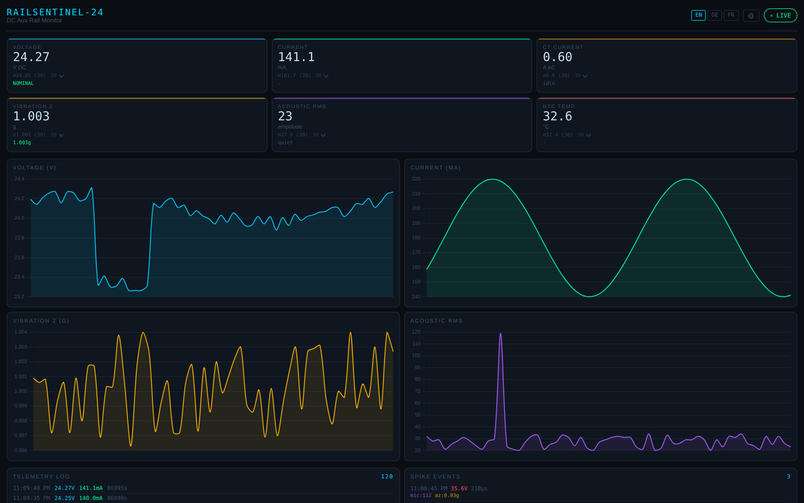

Instruments and software for the electrical layer under charging and grid infrastructure — the layer OCPP doesn't measure.
Says: "faulted".
Lost when the controller resets.
Control power · pilot lines · leakage. Measured in hardware.
One thing at a time. Stage stated plainly.
Control-power monitor for DC fast chargers. Catches the spike, reads out by NFC, trends the fleet. New: two controllers, self-supervising.
Product page →
Which cabinet drifts. Which event repeats. Which part fails.
~1 in 7 charging attempts fails — mostly before charging starts. CP / PP analysis shows why: charger or vehicle.
Leakage and insulation monitoring for distribution assets.
Sags and transients on the AC feed. Same software.
Pilot = hardware you can install · In development = code + date · Concept = a direction, not a promise.
Bare module for factory integration. Field data for warranty.
Start the OEM conversation →Classified at the edge. Results, not raw data, via your router or our accessory router.
Ask about a pilot →Same sensing for leakage and insulation. Exploring with partners.
Explore with us →Isolated. Field-mountable. On the signal itself.
Trend, correlate, classify. The answer is a cause.
IEC 61851 · ISO 15118 · OCPP · CE · CRA
Chargers fail, get power-cycled, fail again — and no log says why. RailSentinel-24 is the instrument we wanted in the van.
15 years in EV charging and power electronics: platforms, standards, certification.
Pilot, OEM, or a fault you can't see — write a few lines.